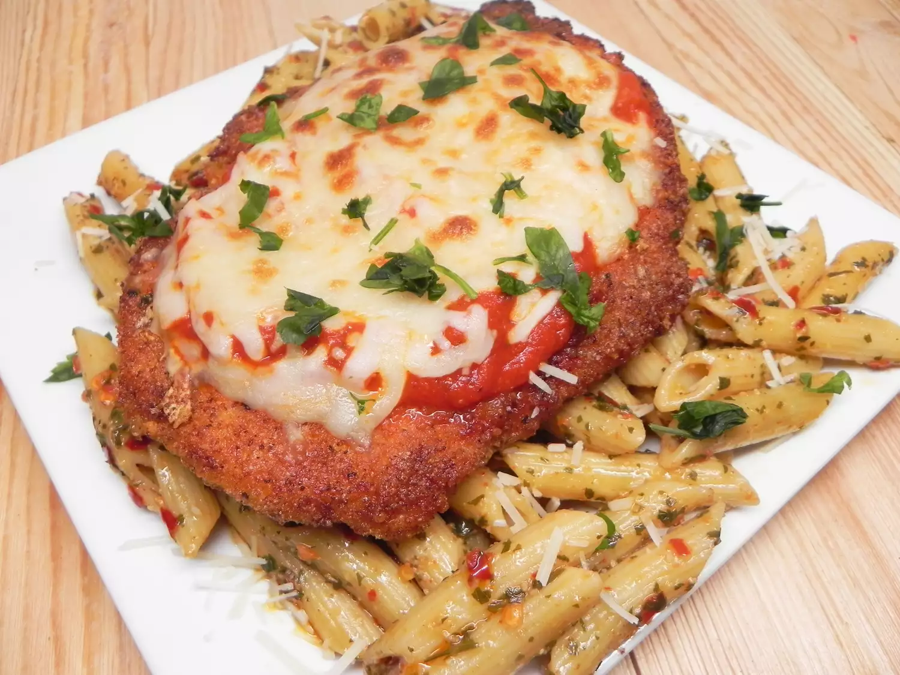

Keto Chicken Parmesean

description
A low-carb alternative to the classic Chicken Parmesean.
Ingredients
- 1 (8 ounce) skinless, boneless chicken breast
- 1 large egg
- 1 tablespoon heavy whipping cream
- 1 ½ ounces pork rinds, crushed
- 1 ounce grated Parmesean cheese
- ½ teaspoon salt
- ½ teaspoon garlic powder
- ½ teaspoon ground black pepper
- ½ teaspoon italian seasoning
- 1 tablespoon ghee (clarified butter)
- ½ cup jarred tomato sauce
- ¼ cup shredded mozzarella cheese
Steps
- Set the oven rack to the top and preheat the broiler
- Slice chicken through the middle, lay flat (should be ½ inch thick)
- Beat egg and cream together in a bowl
- Combine crushed pork rinds, Parmesan cheese, salt, garlic powder, red pepper, black pepper, and Italian seasoning in a separate shallow bowl or plate.
- Dip chicken into egg mixture, coating completely. Press chicken into pork rind mixture, coating both sides
- Heat a skillet over medium-high heat; add ghee. Place chicken in the pan; cook until no longer pink in the center and the juices run clear, about 3 minutes per side. An instant-read thermometer inserted into the center should read at least 165 degrees F (74 degrees C)
- Transfer chicken to a baking sheet. Cover with tomato sauce and top with mozzarella cheese
- Broil until cheese is bubbling, about 2 minutes